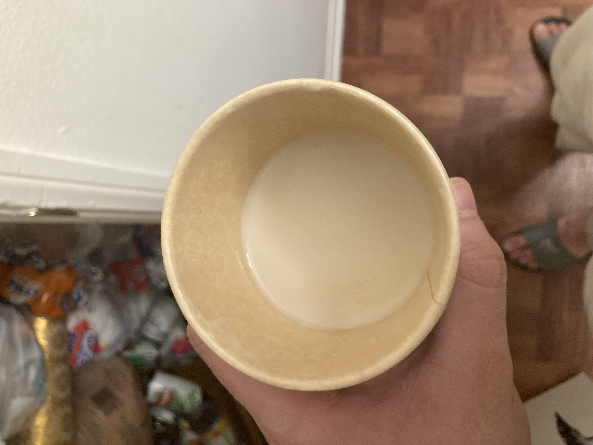

Helpful Culinary Websites
These resources can help people learn about cooking,
recipes, and food safety.
Good cooking begins with fresh ingredients and careful preparation.
Food and Nutrition
Water is represented by the chemical formula H2O. Learning basic information about food can help improve cooking and meal preparation.
